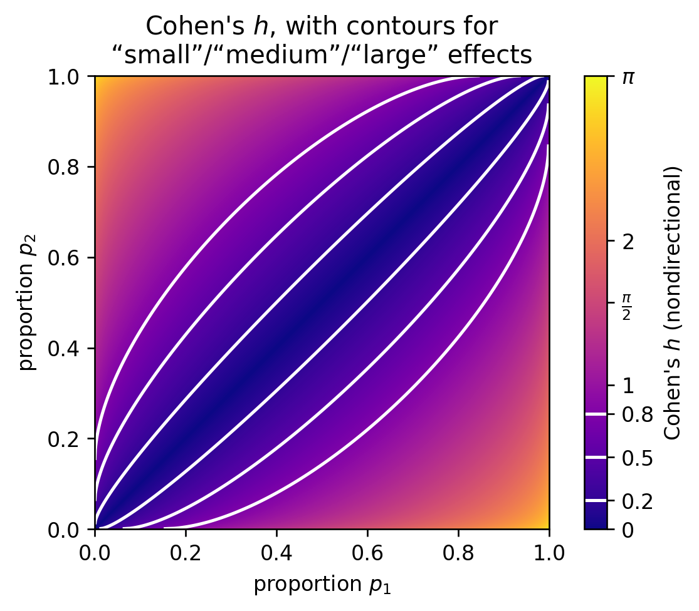
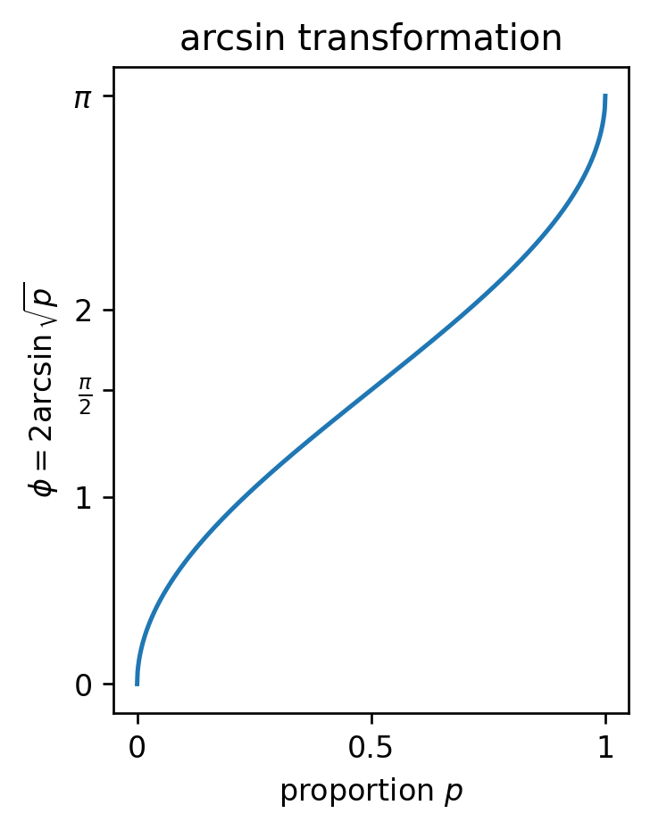

Visualizing Cohen's h
Saturday November 6, 2021
Cohen's h is an effect size for differences between two proportions. It ranges from 0 to \( \pi \) (when nondirectional) and adjusts for whether the proportions are “extreme” (near 0 or 1) so that equal Cohen's h means equal statistical detectability (Cohen 1988).

The heuristic values of 0.2 for “small,” 0.5 for “medium,” and 0.8 for “large” are analogous to the 0.05 confidence level: often taken more seriously than they should be.
Cohen's h is the difference between the two proportions' arcsin transforms.

The arcsin transform stretches out values near 0 and 1 more than values around 0.5. It is bounded though, so for example if your baseline proportion is 0.95, there is no proportion higher than that which will register as a “medium” effect size.
You could replace the arcsin transform with log odds; the logit would allow any size difference anywhere, at least in principle. But I don't think it would have any useful connection to variance, as the arcsin transformation does.
Code is on GitHub.